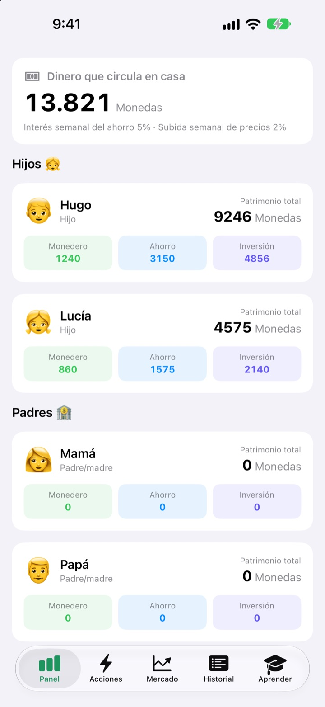
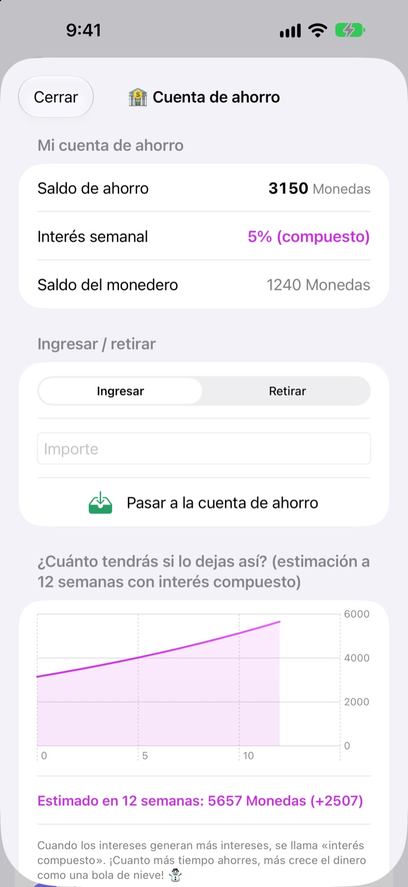
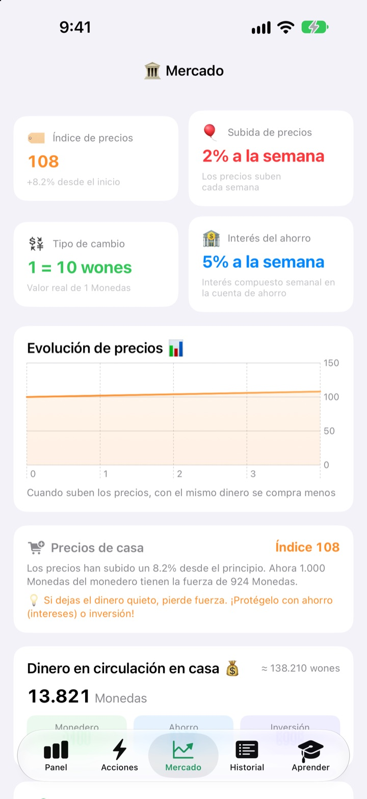
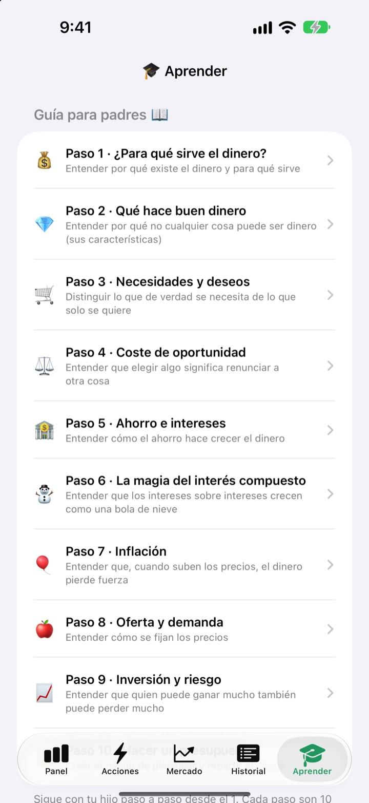

El día de la paga,
una clase de dinero
Tú haces de banco central de la familia y tus hijos son los clientes. Reciben la paga en vuestra propia moneda, se compran sus chuches, ven cómo los intereses llegan a su ahorro y viven las subidas y bajadas de un fondo de práctica.
Todas las funciones son gratis. Nunca se mueve dinero real.

¿Dónde guardarías 1.000 monedas?
Las mismas 1.000 monedas, repartidas en un monedero, una cuenta de ahorro y tres fondos. Avanza semana a semana y mira qué le pasa a cada una. Todo sigue las mismas reglas que la app.
«Si lo ahorras, crece». ¿De verdad le llega a un niño?
Interés, interés compuesto, inflación: cuanto más los explicas, más lejanos suenan. En SukSuk Paga, los niños lo ganan, lo gastan y lo esperan ellos mismos. En cuanto descubren que el ahorro de la semana pasada ha dado intereses, la siguiente paga va directa a la cuenta de ahorro.
La paciencia tiene premio
El dinero de la cuenta de ahorro gana interés compuesto cada semana. Tú decides el tipo, y un gráfico muestra cuánto habrá en 12 semanas si no lo tocan.
¿Pasaron unos días sin abrir la app? Al abrirla se pagan de golpe todas las semanas pendientes.

Ver cómo los precios se comen el monedero
La pestaña Mercado reúne en una pantalla el índice de precios de la familia, la inflación, el tipo de interés, el dinero en circulación y los precios de los fondos. A medida que suben los precios, muestra cuánto menos compran las 1.000 monedas del monedero.
Los niños ven con números claros que el dinero parado encoge, y que el ahorrado o invertido aguanta.

Diez conversaciones para tener juntos
La guía para padres te acompaña en diez pasos: para qué sirve el dinero, necesidades y caprichos, coste de oportunidad, ahorro e intereses, interés compuesto, inflación, inversión y riesgo, y cómo hacer un presupuesto.
Una calculadora de interés compuesto y una de experimento de precios os dejan cambiar los números y ver qué pasa.

Tres pasos para empezar
- 1
Ponle nombre a tu moneda
Judías, Estrellas, Monedas: como queráis llamarla en casa.
- 2
Elige un PIN de padres
Cuatro cifras. Solo quien lo conozca puede dar la paga o cambiar los ajustes del banco.
- 3
Añade a la familia
Añade a los hijos y a los padres, da la primera paga y listo.
Qué hay en cada sitio
- Panel
- El monedero, el ahorro y las inversiones de todos de un vistazo
- Acciones
- Dar o descontar paga, Código de barras, Añadir artículo, Invitar a un hijo, Modo teléfono del hijo, Ajustes del banco (requiere el PIN de padres)
- Mercado
- Índice de precios, inflación, tipo de cambio, interés del ahorro, dinero en circulación, precios de los fondos
- Historial
- Cada movimiento de dinero por fecha, por miembro o por tipo
- Aprender
- Guía para padres en diez pasos, calculadora de interés compuesto, calculadora de experimento de precios
- 🐢 Fondo Tortuga Seguro
- Pocos vaivenes al día, sube despacio y sin sustos
- 🐰 Acciones Conejo Crecimiento
- Sube y baja, pero va creciendo
- 🚀 Acciones Cohete Aventura
- Puede dispararse o desplomarse
Empieza con un 5 % de interés semanal en el ahorro y un 2 % de inflación semanal. Puedes cambiar ambos en el Modo para padres, en Ajustes del banco. Con la inflación al 0 %, los precios no se mueven.
Todas las funciones son gratis
Gratis
- Tu propia moneda familiar y un Modo para padres protegido con PIN
- Dar y descontar paga, la Tienda de casa y pagos con código de barras
- Una cuenta de ahorro con interés compuesto semanal
- Tres fondos de práctica con gráficos de rentabilidad
- La pestaña Mercado y un historial de movimientos por fecha
- La guía para padres en diez pasos y dos calculadoras
- Modo teléfono del hijo y sincronización con iCloud
Apoya al desarrollador
- Envía una propina de la cantidad que quieras desde Ajustes del banco, en el Modo para padres
- La propina no desbloquea nada. La app funciona igual con o sin ella
Sin anuncios ni suscripciones. El botón de propina solo está dentro del Modo para padres, así que tus hijos nunca ven un botón de compra.
Preguntas frecuentes
¿Se usa dinero real?
No. La moneda y todas las operaciones de la app son de mentira, solo para aprender. No hay conexión con ninguna cuenta bancaria, tarjeta ni efectivo.
¿Cómo vemos las mismas cuentas en el teléfono de mi hijo?
Los dispositivos con la misma cuenta de iCloud sincronizan las cuentas familiares automáticamente. Comprueba que iCloud esté activado en Ajustes > Cuenta de Apple > iCloud. En la pestaña Acciones, desde Invitar a un hijo, puedes crear una invitación con código QR para que la escanee con la cámara. Sin iCloud, los datos se quedan solo en ese dispositivo.
¿Qué es el Modo teléfono del hijo?
Convierte el teléfono de tu hijo en una pantalla hecha solo para él. Únicamente ve su monedero, sus inversiones, su historial y las lecciones, y para salir hace falta el PIN de padres.
He olvidado el PIN de padres.
El PIN se guarda solo en el dispositivo, así que ni siquiera el desarrollador puede recuperarlo. Si eliminas y vuelves a instalar la app podrás configurarla de nuevo, pero también se borrarán los datos que tenías.
¿Cómo funcionan los intereses del ahorro?
Cada semana se suma automáticamente interés compuesto al saldo de ahorro. Tú eliges el tipo en el Modo para padres, y las semanas que hayan pasado se liquidan la próxima vez que se abra la app.
¿Los precios de los fondos siguen al mercado real?
No. Son datos de práctica que cambian una vez al día dentro de la app. Cuanto más arriesgado es el fondo, más se mueve. No son productos financieros reales.
¿Por qué suben los precios?
Para que los niños noten la inflación, el índice de precios de la familia sube un poco cada semana. Puedes cambiar el ritmo, o ponerlo al 0 % para desactivarlo, en el Modo para padres, en Ajustes del banco. Si subes también un poco el precio de las chuches y los juguetes de la Tienda de casa, la lección cala mucho más.
¿Cómo lo borro todo?
Al eliminar la app se borran los datos guardados en el dispositivo. Para los datos sincronizados con iCloud, ve a Ajustes > Cuenta de Apple > iCloud > Gestionar almacenamiento y elimina los datos de la app.
¿Se envía la información de mi familia a algún sitio?
No. No hay registro y todos los datos se quedan en tu dispositivo y en tu propia cuenta de iCloud. El desarrollador solo recibe los comentarios que tú mismo envíes desde el Modo para padres, además de estadísticas de uso anónimas e informes de fallos.
¿En qué dispositivos funciona?
En iPhone con iOS 17.0 o posterior.
¿Dudas, fallos o ideas? Escríbenos a leeo@kakao.com. Si nos dices el modelo de tu dispositivo y la versión de iOS, podremos ayudarte antes.